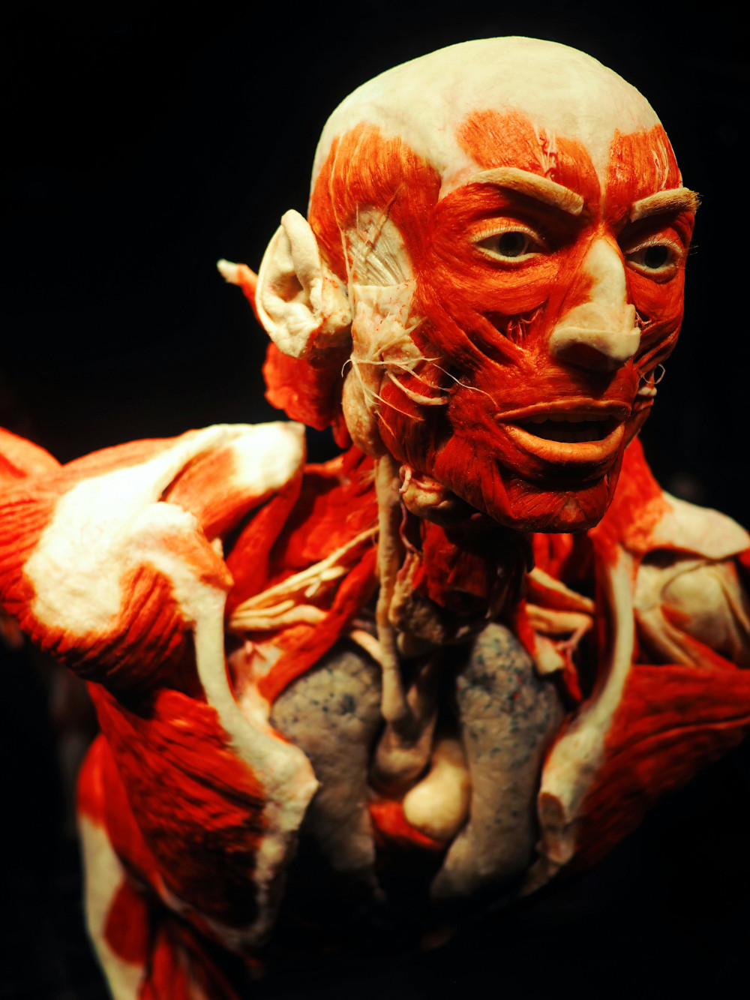

SOBRE NÓS
SOMOS UMA ESCOLA QUE PREPARA PROFISSIONAIS PARA O FUTURO DA SAÚDE E DA PERÍCIA, UNINDO CIÊNCIA TÉCNICA E HUMANIDADE
- FORMAÇÃO TÉCNICA CO FOCO PRÁTICO
Oferecemos cursos como técnico em necropsia. Anatomia aplicada e áreas correlatas voltados para concursos públicos e para alunos aprenderem com quem ive a prática todos os dias.
- CIÊNCIA, MÉTODO E EXPERIÊNCIA
Nosso ensino combina conhecimento científico em métodos pedagógicos que valorizam a disciplina, autoconhecimento e comprometimento com a evolução constante.
- EDUCAÇÃO ACESSÍVEL E COMPROMETIDA
Turmas reduzidas e acompanhamento de perto. O instituto vesalius é uma escola feita para quem quer aprender de verdade.
CURSOS
OFERECENDO UMA FORMAÇÃO DE QUALIDADE PARASUA CARREIRA NA SAÚDE
Formação teórica e prática para atuar com segurança em instituições pública
Entenda a estrutura e as funções do corpo em diversas áreas da ciência
- PREPARAÇÃO PARA CONCURSOS
Cursos livres e focados para se destacar em exames concorridos
CERTIFICADO
CONFIRA ABAIXO AS GARANTIAS DO CERTIFICADO PARA SUA FORMAÇÃO
Certificado valorizado por empregados no setor da saúde
Envio rápido do certificado em formato PDF digital
Verificação de autenticidade através da assinatura